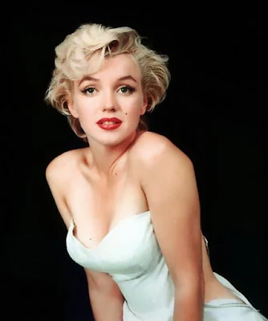
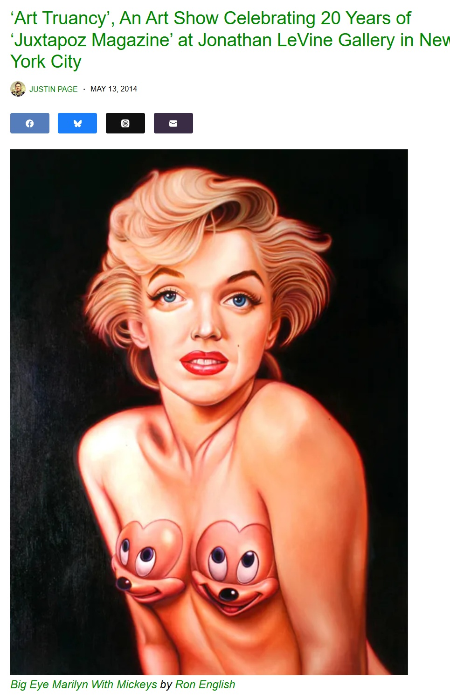
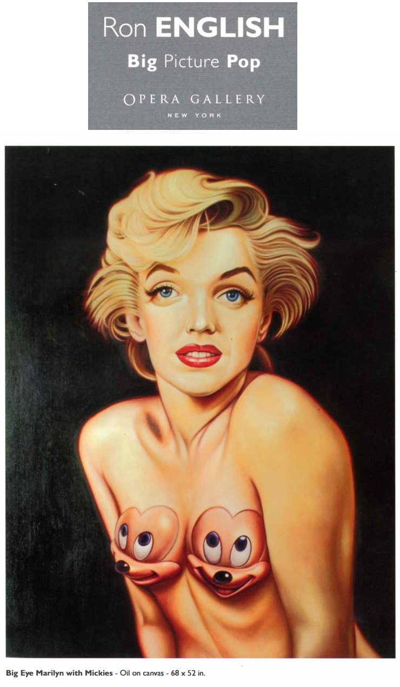
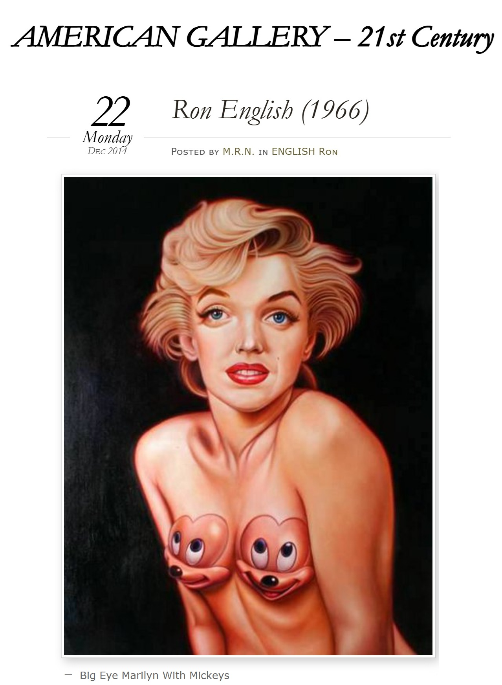

Exhibitions
Big Picture Pop, Opera Gallery, New York, New York, US, November 29–late December 2007.
Art Truancy, Jonathan LeVine Gallery, New York, New York, US, May 15–June 14, 2014.
Notes
This work is reproduced in the exhibition catalogue for Big Picture Pop. In that catalogue, the dimensions were erroneously reported as 68 × 52 inches; this catalogue record retains 70 × 54 inches.
Some online sources identify the work with title variants such as Big Eyed Marilyn or Big Eye Marilyn With Mickeys; this catalogue record retains Big Eye Marilyn.
Ancillary Documentation







